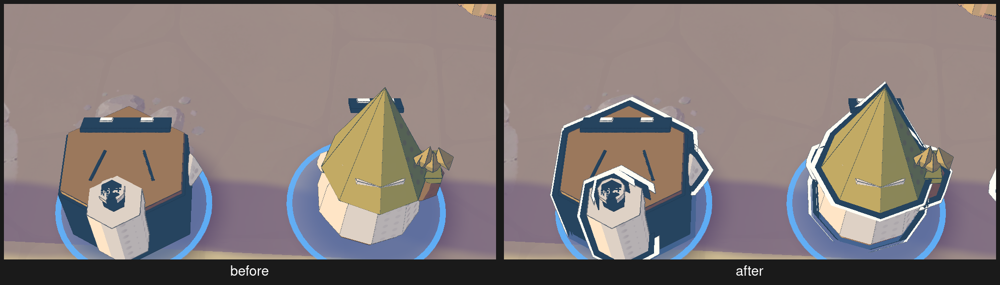
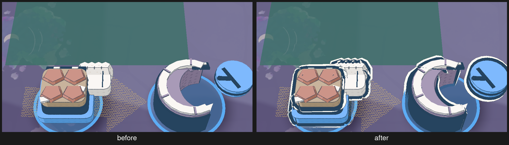
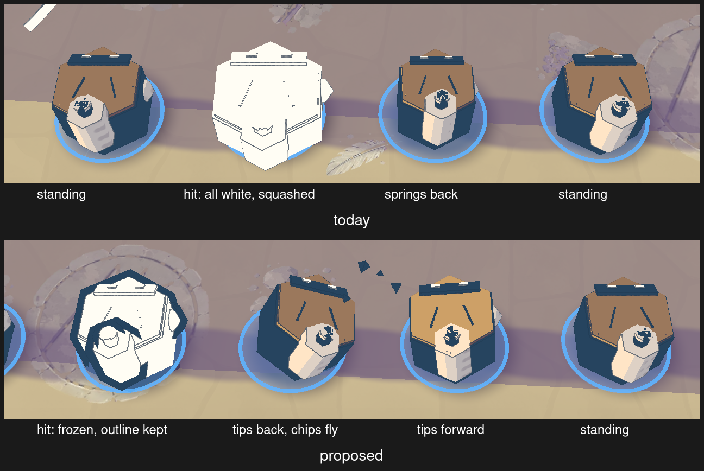
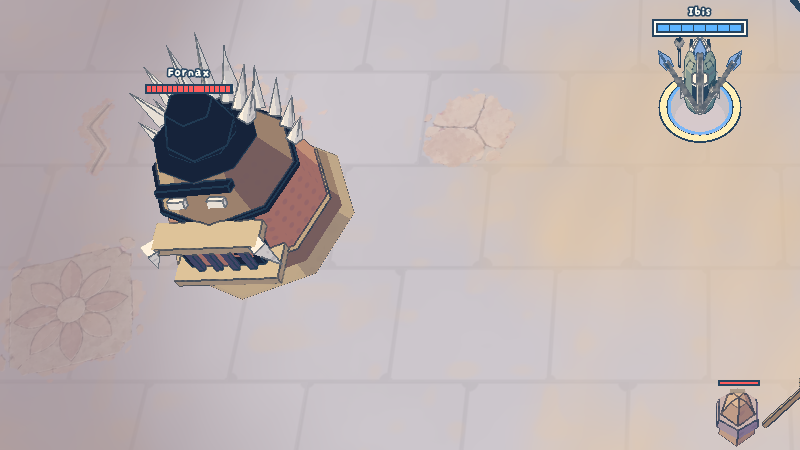

Three quick ideas for the units
To review · 2026-11-15 · thr_b5jw9pbyk3
Fornax is built and on main. The outline and the hit are redone below so the change is plain to see: do you want either?
1. A thick outline
Heroes get a thick dark outline with a thin white line outside it, so they stand out from the floor.


Today a hero wears the same hairline as a flagstone, though look.md asks for thick ink on whatever fights. The dark line is what separates a hero from pale sandstone, and the white line is what separates one from dark stone at night, so every hero carries both and no map needs its own fix. Ibis gains the least from it, being slim and pale, and wants a redraw of her own.
2. A hit that rocks
A hero who is hit tips back like a heavy statue and rights itself, instead of turning into a white blob and squashing like jelly.

The squash is where much of the "too cute" comes from, since it makes every hero look soft. In the proposal the hit freezes for a blink with the hero white but still outlined, so you can tell who was struck, and then the whole figure tips back on the edge of its base, throws off a few dark chips, tips forward once and stands. It is a pose on the drawing alone: nothing moves in the match and no attack gets slower. These frames are posed by hand, and the moving version is the next thing to build if you like it.
3. Fornax, old and sooted
Fornax is now a leaning old kiln with a sooty black crown, two small eyes, a barred mouth and white spikes down its back, where it used to be a red box.

The spikes are the kiln stilts it has fired over the years, and the eyes and the fire behind the bars go dark when it falls.